| 日付 | 2017年9月3日（日） |
|---|---|
| 山域 | 赤城・榛名 |
| メンバー | 家族（妻、長女・6歳、長男・4歳） |
| 山行形態 | 子連れ日帰り |
| アクセス | 車 |
| ルート (Map) | 白樺牧場駐車場 (8:55) - (9:56) 鍬柄山 - (10:56) 鈴ヶ岳 (11:55) - (12:49) 鍬柄山 - (13:39) 白樺牧場駐車場 |
鈴ヶ岳は赤城山の側火山で中心部から少し外れたところにあり、
山頂部の丸い山容は遠くから見ても比較的よく目立つ。
赤城山にはこれまで春～初夏にしか訪れたことがなかったため、
新たな景色を求めて秋晴れの一日に訪れてみることにする。
白樺牧場駐車場に到着。標高1430m。
麓からここまで自転車で登ってきた多くのライダーが休んでいる。
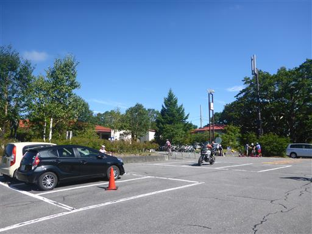
登山口まで少しだけ車道を歩く。
目の前の左右に横たわっている尾根が、これから歩く登山ルートだ。
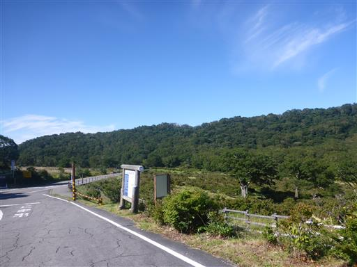
登山口に到着。
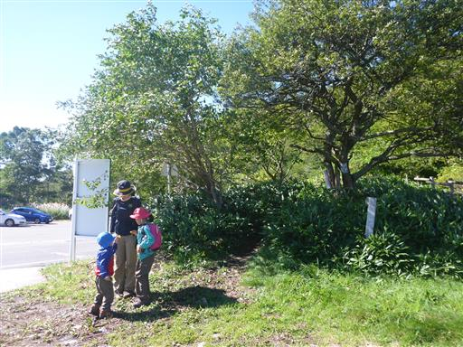
最初は笹に覆われた小さな尾根を登って行く。
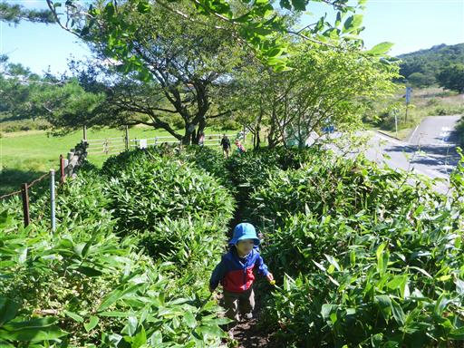
踏み跡は錯綜していて、分岐点があちらこちらにある。
どの道を歩いてもすぐに合流するが、道は1本の方が歩きやすい。
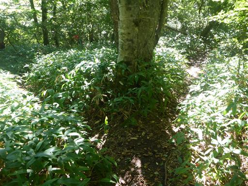
美しい樹林帯。松ぼっくり等を拾いながら登って行く。
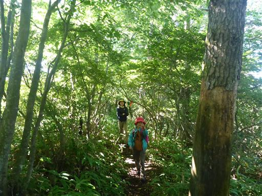
途中で展望台があったので寄り道する。
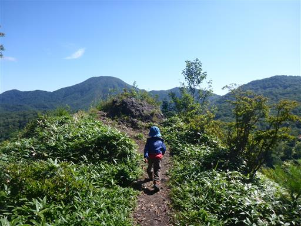
目の前に見えるのは赤城山最高峰の黒檜山。
前の山が邪魔をして、大沼は見えない。
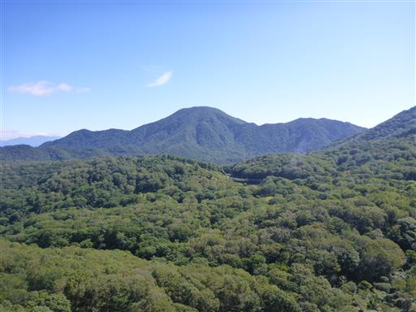
眼下に見えるのは白樺牧場。左の赤い屋根の建物がある場所からここまで歩いてきた。
背後に聳えているのは地蔵岳だ。
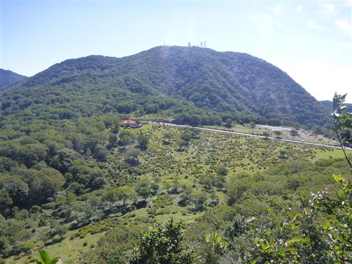
ところどころで緊急時の連絡用の番号が張り付けられている。
10番が山頂かと思ったら、14番が山頂だった…
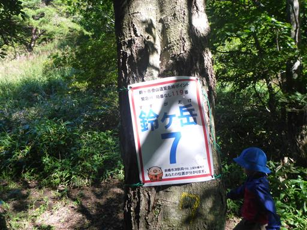
緩やかな尾根道かと思ったら、結構な急斜面が現れる。
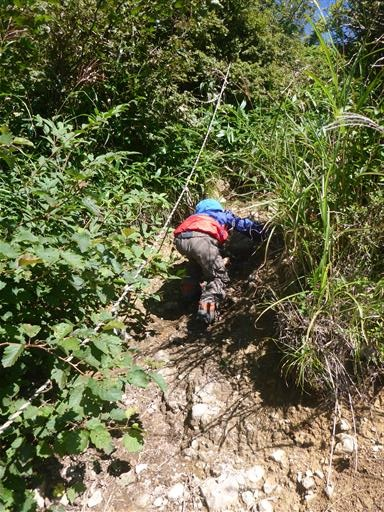
次は草に覆われた登山道。背の低い息子は大変そうだ。
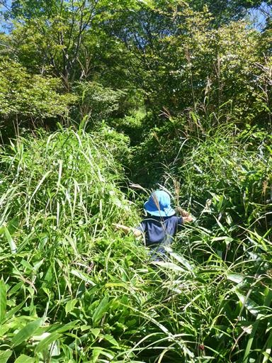
難路を過ぎると展望の良い場所に出てくる。
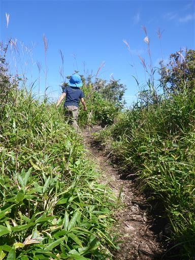
ここからは西側の展望が開ける。
正面に見える複式火山は榛名山、その背後は浅間山だ。
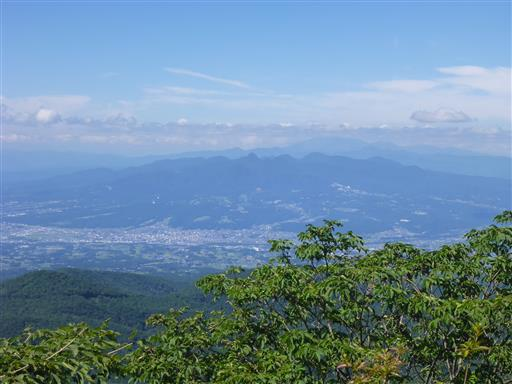
ここまで登ると、黒檜山の麓に広がる大沼を望むことができる。
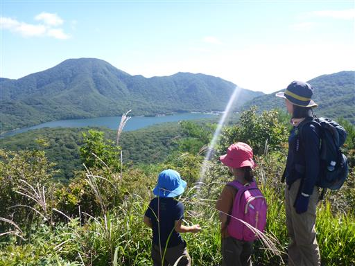
展望が広がってからわずかの距離で鍬柄山の山頂に到着する。
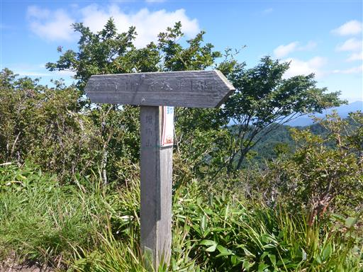
ここでちょうどコースの中間地点。正面に見えるのはかつて登った荒山だ。
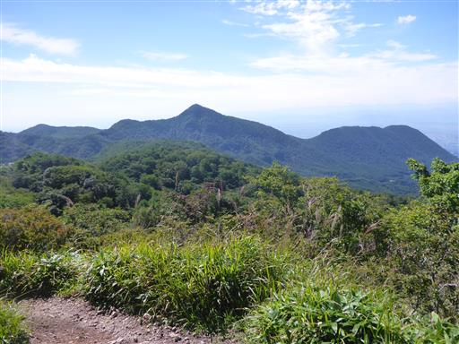
あちらこちらに赤とんぼが飛んでいる。
もう少し涼しくなると下界に下りてくるのだろう。
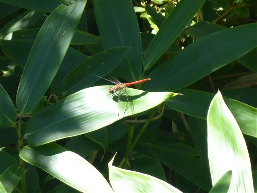
鍬柄山から先はものすごい痩せ尾根になる。
両側の斜面はかなりの傾斜で危険なので、息子とは手をつないで歩いていく。
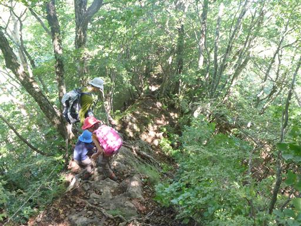
大ダオに到着。鍬柄山と鈴ヶ岳の鞍部で登山道の十字路になっている。
ここから最後の登りが始まる。
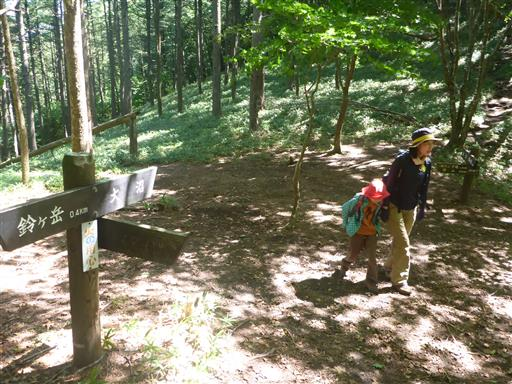
ここから先は急斜面の連続だ。
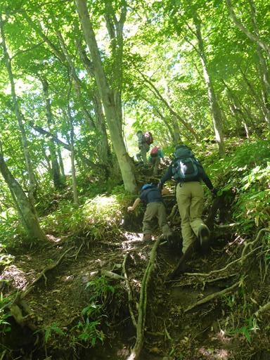
途中で岩場も現れる。
今日は標高差の少ないゆったり登山を想定していたが、
思った以上にアップダウンがあり、登山道も難しい。
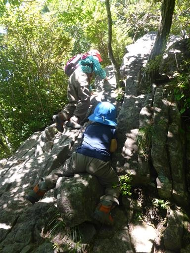
岩場が連続して現れる。
決して難しい岩場ではないのだが、子連れだと少々厳しい道だ。
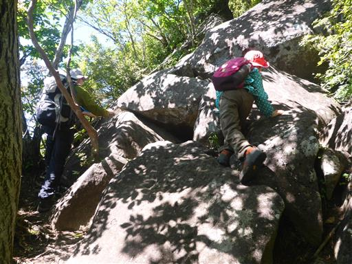
頭上を見上げると、葉が光を浴びて美しく光っている。
5枚の葉があるが、ゴヨウツツジだろうか？
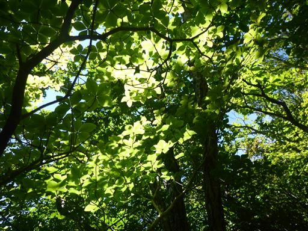
狭い岩の隙間をよじ登る。大人は頭をぶつけそうだ。
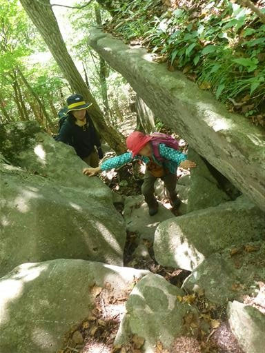
山頂に近づくと登山道の側にいくつかの石碑が見られる。
昔は信仰の山だったようだ。

急な斜面を登り続けて30分、ようやく山頂が見えてくる。
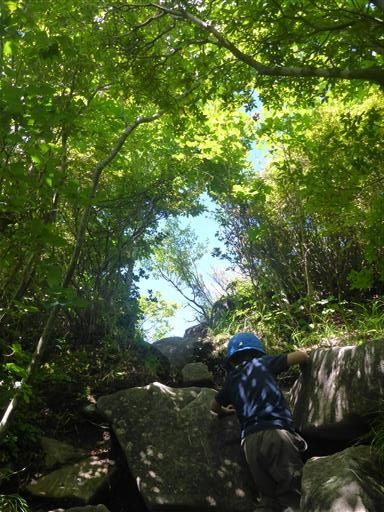
鈴ヶ岳山頂に到着する。標高1565m。
樹木に囲まれた比較的狭い山頂だ。
持っている地図には「展望良好」と書かれているが、ほとんど展望はない。
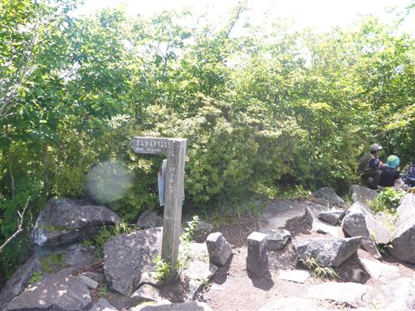
山頂には大きな石碑がある。
こんな大きな石を運ぶことは不可能なので、ここで彫ったのだろう。
登山者の数は多く、比較的人気の山のようだ。
子供たちは昼食をとったら、とんぼや蝶を追いかけている。
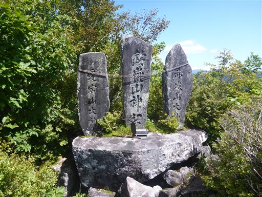
下りは登りと同じ道。慎重に岩場を下る。
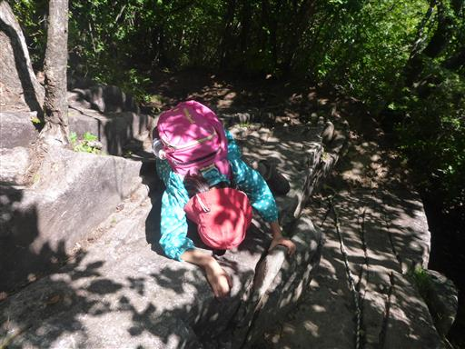
鞍部からは登り道だ。アップダウンのある登山道のため、
下りの中でも結構登りがある。
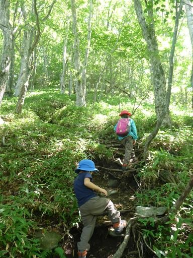
痩せ尾根を登る。下りの時よりは安心して見ていられる。
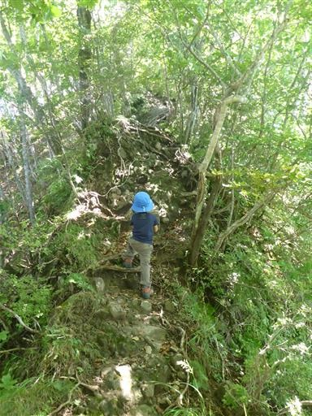
鍬柄山に到着する。
結果的に本山行の最も良い展望ポイントはこの山頂だった。
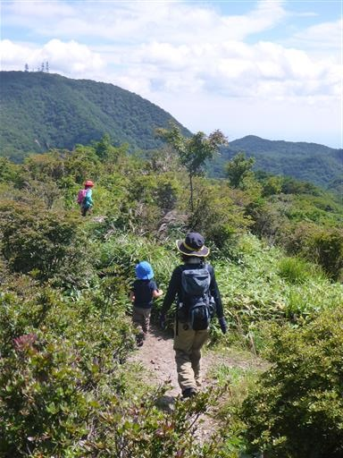
遠くに見えるのは日光の山々、右奥に見えているのは皇海山だ。

無事、白樺牧場まで下ってくる。
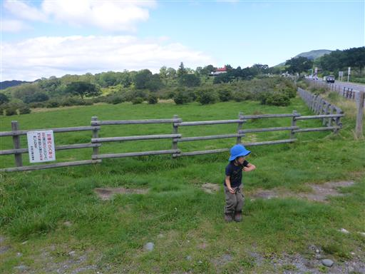
駐車場に到着後、牧場を眺めながらソフトクリームを食べる。ここのソフトクリームは非常においしい。
想定していたのんびりハイキングにはならなかったが、
登りごたえのある楽しい登山だった。
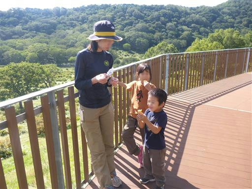